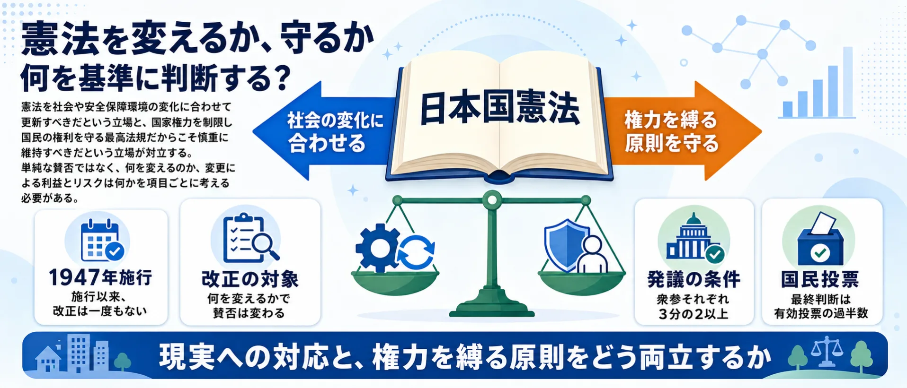
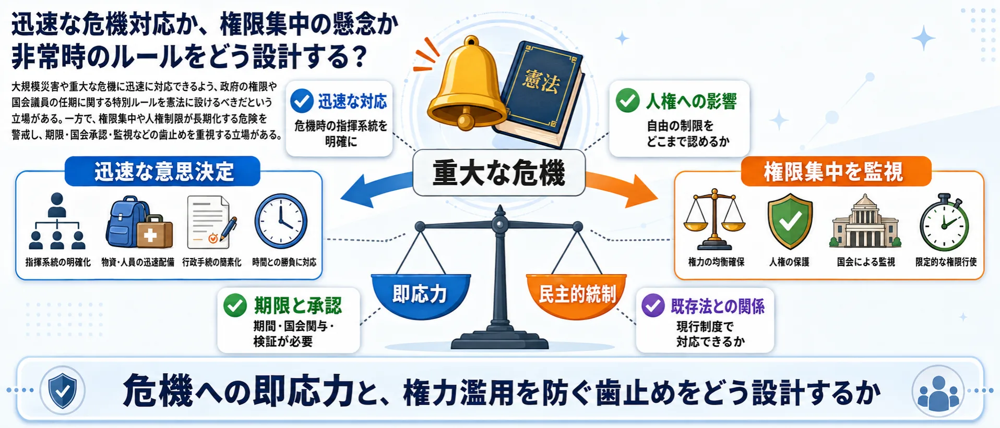

分析対象の意見
775件
収集した876件のうち意見と判定した投稿
現実の安全保障に合わせて改正するのか、平和主義と権力制限を守るのか？
Yahooリアルタイム検索で取得した公開投稿876件のうち、意見と判定した775件を分析対象としています。AIが主要6論点とその他に整理しました。世論調査ではなく、SNS反応サンプルの論点比較です。
収集した876件のうち意見と判定した投稿
540件。4つの立場を同じ意見775件から集計
正典の main_issue をそのまま集計
マップ・論点・賛否は意見だけを対象
憲法改正は、改正全般への賛否だけでは整理できません。9条、緊急事態条項、国民投票の公平性、発議手続き、情報環境ではそれぞれ対立の理由が異なります。6つの図解を確認してから、自分が重く見る論点を選んでください。画像はタップで拡大できます。
改憲全般268件
憲法を社会の変化に合わせるのか、権力を縛る原則として慎重に守るのか。

9条・自衛隊157件
自衛隊の存在と任務を明記する意義と、9条の平和主義への影響を考える。

緊急事態条項107件
重大な危機への即応力と、政府への権限集中を防ぐ仕組みをどう設計するか。

国民投票・広告145件
自由な意見表明を守りながら、資金力や広告量の差をどう整えるか。
政党・発議手続き65件
具体案を国民に問う機会と、国会での十分な審議・合意形成をどう両立するか。

情報・議論の質26件
条文・根拠・発言主体・引用関係を確認し、文脈不足の情報をどう扱うか。
使い方: 6つの争点を図解で確認してから、次の投票で「一番気になる論点」を選んでください。
憲法改正は、9条や緊急事態条項だけでなく、国民投票の公平性や議論の進め方まで含むテーマです。まず一番気になる論点を選び、次に改正への総合的な考えを選んでください。
1一番気になる論点を選ぶ （全2問）
2憲法改正への考えは？ 選ぶと結果を表示します
中心の「憲法改正」を6つの論点セクターが囲みます。扇の大きさは投稿数、中心からの距離は主張の強さ（外側ほど強い反応）、点の色は立場（青=改正推進 / 赤=慎重・反対 / 緑=手続き重視 / 灰=中立）。点をクリックすると元のXポストを開きます。

憲法を時代に合わせるべきか、現行憲法の原則を守るべきか。
改憲発議を阻止し、国民投票では反対すると明言している
@elsa05286457 の投稿をXで見る
「憲法改正に絶対に反対というわけではない」と述べ、相手の改憲賛成理由を問うている。
@LovePeaceMJfan の投稿をXで見る
自衛隊を憲法に明記する意義と、9条の平和主義への影響。
改憲は自衛隊を米国の捨て駒にし、海外派遣と戦死に繋がるとして改憲に反対を主張する。
@FSNg7hpPtvnUjIF の投稿をXで見る
自衛隊明記について「どうでも良い」とし、ウクライナ支援のための現行法整備を優先すべきだと主張している。
@SDzpp8XtPmUsyN2 の投稿をXで見る
災害などへの迅速な対応と、政府への権限集中リスク。
学者の説明を参考に、緊急事態条項追加と衆議院議員定数削減は「必要なし」と結論づけ、選挙に行き憲法改正に反対しようと呼びかけている。
@rrevv2021 の投稿をXで見る
緊急事態条項を含む法制度の是非は、採用国数ではなく国民の自由侵害の有無、権力抑制の可否、メリットデメリットの比較が重要だと論じている。
@BANGs_1019 の投稿をXで見る
CM・ネット広告・資金力の差を含む国民投票の公平性。
国民投票法改正案に反対し、有効投票の過半数で成立する仕組みにより有権者の少数の賛成で憲法改正が承認される可能性を懸念する
@tamacha1965 の投稿をXで見る
改憲が悪いと思うなら国民投票で反対すればいいと、国民投票の仕組みを説明している。
@Niceguy27753 の投稿をXで見る
政党の姿勢、国会での合意形成、発議までの進め方。
参議院の憲法審査会開催と国民投票法改正の阻止を強く訴えている。
@chibichibi_0801 の投稿をXで見る
維新と自民党の連立交渉における都構想と憲法改正の党是関係を論じている。
@ugogufi の投稿をXで見る
事実確認、過激な断定、論点を理解できる情報環境。
YouTuberおみそんと高橋洋一氏が比例定数削減と緊急事態条項に賛成する姿勢にあることを指摘し、左翼一掃を肯定するような議論のあり方や政党への配慮欠如を批判的に評価する。
@j6h9G7IZy0wvtLg の投稿をXで見る
憲法改正論議において数値で嘘をつく行為を問題視し、意見の相違とは別に事実認識の歪みを指摘する
@higher88672 の投稿をXで見る
主要6論点のほか「その他」7件も、マップと詳細集計には含めています。
日本国憲法は1947年の施行以来、一度も改正されたことがありません。近年の改憲論議では、9条への自衛隊明記、大規模災害時などに政府の権限を強化する緊急事態条項の創設、教育無償化、参議院の合区解消などが主な項目として挙げられています。改正には衆参両院で3分の2以上の賛成による発議と、国民投票での過半数の賛成が必要です。
賛成する立場からは「自衛隊の憲法上の位置づけを明確にすべき」「現行憲法は時代に合わなくなっている」という主張があり、反対する立場からは「9条改正は戦争への道を開く」「緊急事態条項は権力の濫用につながる」「改憲よりも優先すべき課題がある」といった主張があります。
また、賛否そのものだけでなく、国民投票時のCM規制やネット広告のあり方など、手続き面の公平性をめぐる議論も続いており、世代や支持政党によって意見の分布が大きく異なるテーマです。
自衛隊明記、防衛、緊急事態対応などを理由に、憲法改正を進めるべきと見る立場。
9条改正や緊急事態条項は平和主義の後退や権限集中につながると見る立場。
改憲の中身以前に、広告規制、資金、SNS、国民投票法の整備を重視する立場。
政党批判、強い断定、文脈不足など、記事化前に確認が必要な反応。
| 改憲全般 | 268 |
|---|---|
| 9条・自衛隊 | 157 |
| 緊急事態条項 | 107 |
| 国民投票・広告 | 145 |
| 政党・発議手続き | 65 |
| 情報・議論の質 | 26 |
| その他 | 7 |
| 合計 | 775 |
| 慎重・反対 | 540 |
|---|---|
| 中立 | 60 |
| 手続き重視 | 14 |
| 改正推進 | 161 |
| 合計 | 775 |
| high | 316 |
|---|---|
| medium | 384 |
| low | 75 |
| 合計 | 775 |
ページ上の件数はすべて正典の意見775件から scripts/build_constitutional_arena.py が生成しています。
| 分類 | 9条 改正 | 国民投票 改憲 | 国民投票法 広告規制 憲法改正 -rt | 憲法9条 改正 自衛隊 -rt | 憲法改正 反対 | 憲法改正 自衛隊 明記 -rt | 憲法改正 賛成 | 憲法改正 賛成 反対 -rt | 改憲 賛成 OR 反対 | 緊急事態条項 | 緊急事態条項 賛成 反対 -rt | 合計 |
|---|---|---|---|---|---|---|---|---|---|---|---|---|
| 改憲賛成・推進 | 18 | 9 | 0 | 2 | 0 | 0 | 0 | 3 | 7 | 10 | 0 | 49 |
| 改憲反対・護憲 | 15 | 14 | 0 | 4 | 34 | 2 | 1 | 16 | 26 | 1 | 0 | 113 |
| 9条・自衛隊明記に賛成 | 0 | 0 | 0 | 24 | 0 | 21 | 0 | 2 | 0 | 0 | 0 | 47 |
| 9条・自衛隊明記に反対 | 0 | 0 | 0 | 4 | 0 | 0 | 0 | 0 | 0 | 0 | 0 | 4 |
| 緊急事態条項に賛成 | 0 | 0 | 0 | 0 | 0 | 0 | 0 | 0 | 0 | 5 | 0 | 5 |
| 緊急事態条項に反対 | 0 | 0 | 0 | 2 | 0 | 11 | 0 | 1 | 0 | 16 | 21 | 51 |
| 国民投票法・広告規制を重視 | 0 | 2 | 39 | 1 | 0 | 4 | 3 | 12 | 0 | 0 | 15 | 76 |
| 政党・議員批判 | 1 | 0 | 0 | 0 | 1 | 0 | 13 | 3 | 6 | 1 | 0 | 25 |
| 事実確認・情報共有 | 1 | 6 | 0 | 0 | 1 | 0 | 6 | 0 | 0 | 0 | 0 | 14 |
| 未確認・過激表現 | 0 | 0 | 0 | 0 | 0 | 0 | 2 | 0 | 1 | 0 | 0 | 3 |
| その他・分類保留 | 3 | 7 | 0 | 1 | 1 | 1 | 14 | 3 | 0 | 5 | 0 | 35 |
| 分類 | 改憲支持 | 改憲反対 | 手続き重視 | 慎重 | 中立 | 未確認 | その他 | 反対 | 問題視 | 支持 | 評価しない | 項目別反対 | 合計 |
|---|---|---|---|---|---|---|---|---|---|---|---|---|---|
| 改憲賛成・推進 | 44 | 0 | 0 | 0 | 0 | 0 | 0 | 0 | 0 | 5 | 0 | 0 | 49 |
| 改憲反対・護憲 | 0 | 91 | 0 | 0 | 0 | 0 | 0 | 21 | 0 | 0 | 1 | 0 | 113 |
| 9条・自衛隊明記に賛成 | 0 | 0 | 0 | 0 | 0 | 0 | 0 | 0 | 0 | 47 | 0 | 0 | 47 |
| 9条・自衛隊明記に反対 | 0 | 0 | 0 | 0 | 0 | 0 | 0 | 4 | 0 | 0 | 0 | 0 | 4 |
| 緊急事態条項に賛成 | 5 | 0 | 0 | 0 | 0 | 0 | 0 | 0 | 0 | 0 | 0 | 0 | 5 |
| 緊急事態条項に反対 | 0 | 0 | 0 | 0 | 0 | 0 | 0 | 35 | 0 | 0 | 0 | 16 | 51 |
| 国民投票法・広告規制を重視 | 0 | 0 | 5 | 18 | 0 | 0 | 0 | 0 | 53 | 0 | 0 | 0 | 76 |
| 政党・議員批判 | 10 | 9 | 0 | 0 | 0 | 2 | 1 | 2 | 0 | 0 | 1 | 0 | 25 |
| 事実確認・情報共有 | 0 | 0 | 0 | 0 | 14 | 0 | 0 | 0 | 0 | 0 | 0 | 0 | 14 |
| 未確認・過激表現 | 0 | 0 | 0 | 0 | 0 | 3 | 0 | 0 | 0 | 0 | 0 | 0 | 3 |
| その他・分類保留 | 12 | 7 | 0 | 0 | 12 | 0 | 1 | 0 | 0 | 0 | 3 | 0 | 35 |
憲法改正に関する投稿の10つの主張を、条文・政党の公表資料などの一次資料に1つずつ当たって確かめました。「原典にたどり着けず」はそのまま残しています。確認日は2026年8月20日です。報道・解説サイトは参照していません。
国民投票は有効投票の過半数で成立し、最低投票率の規定はない
5件の投稿一次資料の記述。国民投票法（日本国憲法の改正手続に関する法律）第98条第1項は「憲法改正案に対する賛成の投票の数が投票総数の二分の一を超えた場合は、当該憲法改正について日本国憲法第九十六条第1項の国民の承認があったものとする」と定める。法文中に最低投票率の規定はなく、附則第11条に「投票率が低い場合における措置について検討する」という努力義務が置かれているのみ。施行から18年が経つが、最低投票率を義務づける立法措置は講じられていない。
原典にある過半数で成立・最低投票率なしは、いずれも条文の直接の読みとして正確。附則の検討条項は法的効力を持たない。
国民投票の放送CM規制は投票日前14日間だけで、それ以前は無制限だ
5件の投稿一次資料の記述。国民投票法第105条第1項は「何人も、国民投票の期日前十四日に当たる日から国民投票の期日までの間、憲法改正に関する広告放送（テレビジョン放送及びラジオ放送に限る）をしてはならない」と定める。同条はその14日間に限定して放送CMを禁止しており、それより前の期間やインターネット広告については禁止規定が本則に置かれていない。
原典にある14日間という数字は第105条の条文どおり。14日より前は放送CM量の上限も設けられておらず、「それ以前は無制限」という読みも条文上は否定できない。
国会が発議してから国民投票まで最短60日、最長180日だ
1件の投稿一次資料の記述。国民投票法第2条は「国民投票は、少なくとも六十日、多くとも百八十日の範囲で国会が議決した期日にこれを行う」と定める。
原典にある60日以上180日以内という数字は第2条の条文どおり。期日の決定は国会の議決によることも明記されている。
衆参両院それぞれで総議員の3分の2以上の賛成がないと発議できない
5件の投稿一次資料の記述。日本国憲法第96条第1項は「この憲法の改正は、各議院の総議員の三分の二以上の賛成で、国会が、これを発議し、国民に提案してその承認を経なければならない」と定める。「各議院の」とあるため、衆議院・参議院の両院それぞれで3分の2以上が必要。
原典にある3分の2・各議院という条件は第96条第1項の条文どおり。「総議員」の解釈（欠員を含むか）に学説上の議論はあるが、3分の2以上という数字の読みに食い違いはない。
自民党の改憲案では緊急事態条項が通ると内閣が国会を経ずに法律を作れる
3件の投稿一次資料の記述。自民党の条文イメージ（2018年3月）第73条の2第1項は「大規模な自然災害その他の法律の定める緊急事態において、特に必要があると認めるときは、閣議にかけて、法律に代わる政令を制定することができる」と定める。ただし、第64条の2では宣言には国会の承認が、政令には国会の事後承認がそれぞれ必要とされており、承認を得られなければ政令は効力を失う。
原典とずれる政令は閣議決定だけで制定できる段階が存在するため「国会を経ずに」という表現は一面では当たっているが、国会の事後承認がなければ効力が続かない仕組みは落ちている。「国会を完全に迂回して永続的に効力を持つ法律を作れる」という読みは条文と合わない。
現行の9条には「自衛隊」という文字はなく、戦力不保持と交戦権の否認が書かれている
5件の投稿一次資料の記述。日本国憲法第9条第1項は「日本国民は、正義と秩序を基調とする国際平和を誠実に希求し、国権の発動たる戦争と、武力による威嚇又は武力の行使は、国際紛争を解決する手段としては、永久にこれを放棄する」、第2項は「前項の目的を達するため、陸海空軍その他の戦力は、これを保持しない。国の交戦権は、これを認めない」と定める。「自衛隊」の語は第9条のどの項にも存在しない。
原典にある「自衛隊の文字がない」「戦力不保持・交戦権否認が書かれている」はいずれも第9条の条文の直接引用に基づく。自衛隊の存在根拠を9条の枠外に求める政府解釈については第9条に条文はない。
自民党の改憲案は9条に「自衛隊」を書き加えるだけで、実質は変わらない
4件の投稿一次資料の記述。自民党の条文イメージ（2018年3月）第9条の2第1項は「前条の規定は、我が国の平和と独立を守り、国及び国民の安全を保つために必要な自衛の措置をとることを妨げず、そのための実力組織として、法律の定めるところにより、内閣の首長たる内閣総理大臣を最高の指揮監督者とする自衛隊を保持する」と定める。
原典とずれる「自衛隊」の文字を加えることに加え、「必要な自衛の措置をとることを妨げず」という留保条項と「内閣総理大臣を最高の指揮監督者とする」という指揮命令の明文化が盛り込まれている。現行9条には存在しないこれらの文言が追加されるため、「書き加えるだけ」という表現は変化の範囲を過小評価している。
2026年の国民投票法改正でインターネット広告規制が明文化された
5件の投稿一次資料の記述。現行の国民投票法（令和4年改正時点）附則第12条は「インターネット等を用いた意見表明に係る規制の在り方については、（中略）検討を加え、必要な法制上の措置を講ずる」という努力義務の検討条項にとどまる。2026年6月に衆院憲法審査会を通過したとされる改正法案の条文テキストは、公開されているe-Govのデータベースに未収録であり、条文の確認ができなかった。
原典にたどり着けず現行法（令和4年版）の時点では、ネット広告規制は附則の「検討事項」であり禁止規定ではない。投稿が言及している2026年改正の条文は公式データベースに掲載がなく、「明文化された」かどうかを確認する原典にたどり着けなかった。
9条に自衛隊を明記しても18条（苦役の禁止）を変えない限り、徴兵制は憲法上できない
1件の投稿一次資料の記述。日本国憲法第18条は「何人も、いかなる奴隷的拘束も受けない。又、犯罪に因る処罰の場合を除いては、その意に反する苦役に服させられない」と定める。稲田朋美防衛大臣は2016年10月11日の参議院予算委員会で「徴兵制は憲法十八条が禁止をするところの苦役に当たります」と答弁している。自民党の条文イメージ（2018年3月）が提案する改正対象は第9条の2・第73条の2・第64条の2・第47条・第92条・第26条の6項目であり、第18条の改正は含まれていない。
原典にある政府は徴兵制を「憲法18条が禁じる苦役に当たる」と国会で説明している。自民党の条文イメージ（2018年3月）に第18条の改正が含まれていないことは原文から確認できる。
憲法学説では自衛隊の存在を違憲とする解釈と合憲とする解釈が並立している
3件の投稿一次資料の記述。安倍晋三内閣総理大臣は2017年5月9日の参議院予算委員会で「七割、八割の方々が違憲と言っていて、その記述は教科書の中にもある」と述べ、憲法学者の多数が自衛隊を違憲とする見解をとっていることを認めた。同時に、政府の立場については「合憲だという立場はこれは全く揺るがない一貫した考え方」と答弁している。
原典にある政府は自衛隊を合憲と解釈しているが、総理大臣自身の国会答弁で「7〜8割の憲法学者が違憲論」という学説上の並立状態を認めている。合憲・違憲どちらが正しいかについては、この答弁は判断していない。
件数の数え方：本文をキーワードで検索すると、趣旨が異なる投稿や報道の引用まで拾って実際より3〜4割多く出ます。候補を1件ずつ読み、実際にその主張をしている投稿だけを残して数えています。賛成・反対どちらの投稿も含みます。
 生成AIと著作権
生成AIと著作権 自転車の青切符
自転車の青切符 消費税減税
消費税減税